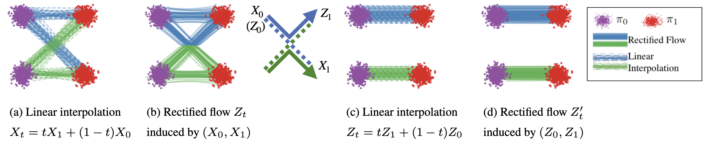
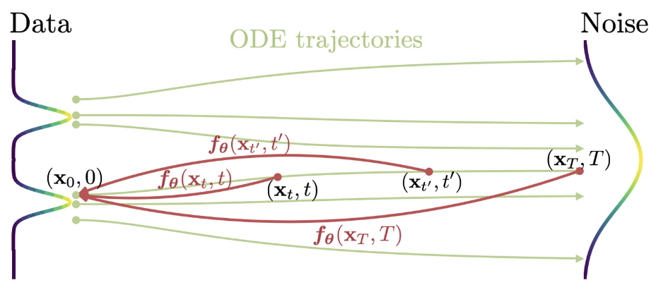
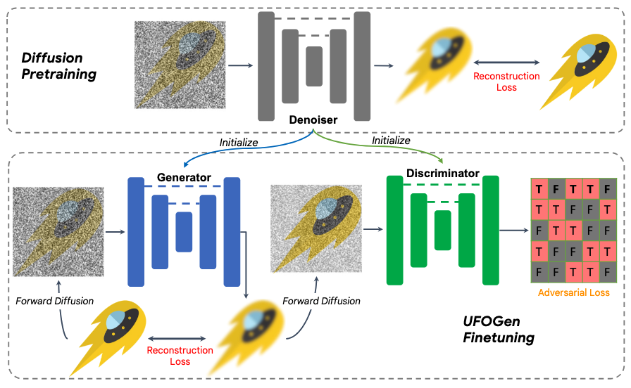

Diffusion Distillation
Introduction
尽管扩散模型在生成质量、似然估计和训练稳定性上表现出卓越的性能，但其最大的缺点就是采样耗时。为此，许多采样器被提出以加速采样过程，例如 DDIM, Analytic-DPM, PNDM, DPM-Solver 等等，它们着眼于更精确地求解扩散 ODE，例如采用高阶的求解器并充分利用扩散 ODE 的特殊结构。然而，受制于模型本身的误差，此类 training-free 的方法再精确也难以做到 10 步以内的高质量生成。
随着领域的发展，如今开源/闭源界已经训练了许多高质量的扩散模型，这使得在已有模型的基础上蒸馏一个新的模型成为了不错的方案。所谓蒸馏，即训练一个 student 模型，其一步去噪的效果相当于原 teacher 模型多步去噪的效果。相比优化采样器的方法，基于蒸馏的方法往往能够实现 4 步、2 步甚至 1 步采样，彻底解决扩散模型采样耗时的问题。
Knowledge Distillation
基本思想 Knowledge Distillation (KD) 原本来自于 Hinton 等人提出的概念，指让 student 模型学习 teacher 模型输出的分布，使之具有接近甚至超过 teacher 模型的能力。放在扩散模型的语境下，teacher 模型就是预训练的多步生成扩散模型，student 模型就是我们想训练的一步生成模型，因此 KD 的目标就是让 student 模型一步生成与 teacher 模型多步生成相同的结果。
具体实现 KD 的实现方式非常简单直接（甚至过于简单直接），即用 teacher 模型通过确定性采样器（例如 DDIM）生成若干「噪声-图像对」作为数据集，学生模型回归这些「噪声-图像对」即可。形式化地，设 \(\mathbf F_\text{teacher}(\mathbf x_T)\) 表示 teacher 模型经由多步 DDIM 从 \(\mathbf x_T\) 生成的图像，\(\mathbf F_\text{student}(\mathbf x_T)\) 表示 student 模型，则损失函数为： \[ \mathcal L_\text{student}=\mathbb E_{\mathbf x_T}\left[\left\Vert\mathbf F_\text{student}(\mathbf x_T)-\mathbf F_\text{teacher}(\mathbf x_T)\right\Vert^2\right] \] 方法评价 显然，KD 最大的缺点在于用 teacher 模型生成大量数据集的过程非常耗时，甚至可能超过蒸馏 student 模型的训练时间；另外，直接让 student 模型回归「噪声-图像对」过于困难，其生成质量很一般，远远达不到 teacher 模型的水平。尽管如此，后续更先进蒸馏方法（例如 DMD）可以采用 KD 作为正则项或者初始化。
Progressive Distillation
基本思想 既然 KD 直接从噪声回归图像过于困难，那么我们可以把问题拆解开，每次蒸馏只将采样步数缩短到原来的一半，如此进行 \(\log_2 N\) 次迭代，就可以把 \(N\) 步生成模型蒸馏为一步生成模型。这就是 Progressive Distillation (PD).

具体推导 假设有一个 teacher 扩散模型 \(\mathbf x_\eta(\cdot)\)，我们希望从中蒸馏一个 student 模型 \(\mathbf x_\theta(\cdot)\)，使其一步去噪相当于 teacher 模型两步去噪的效果。为此，首先采样 \(\mathbf x\sim\mathcal D,\,\mathbf x_t\sim q_{t\vert0}(\mathbf x_t\vert\mathbf x)\)，然后用 teacher 模型实施两步 DDIM 去噪，得： \[ \begin{gather} \mathbf x_{t'}=\alpha_{t'}\mathbf x_\eta(\mathbf x_t)+\frac{\sigma_{t'}}{\sigma_t}(\mathbf x_t-\alpha_t\mathbf x_\eta(\mathbf x_t))\\ \mathbf x_{t''}=\alpha_{t''}\mathbf x_\eta(\mathbf x_{t'})+\frac{\sigma_{t''}}{\sigma_{t'}}(\mathbf x_{t'}-\alpha_{t'}\mathbf x_\eta(\mathbf x_{t'})) \end{gather} \] 如此得到三元组 \((\mathbf x_t,\mathbf x_{t'},\mathbf x_{t''})\). 对于 student 模型，我们希望它一步去噪就能从 \(\mathbf x_t\) 得到 \(\mathbf x_{t''}\)，即： \[ \mathbf x_{t''}=\alpha_{t''}\mathbf x_\theta(\mathbf x_t)+\frac{\sigma_{t''}}{\sigma_t}(\mathbf x_t-\alpha_t\mathbf x_\theta(\mathbf x_t)) \] 整理得： \[ \mathbf x_\theta(\mathbf x_t)=\frac{\mathbf x_{t''}-(\sigma_{t''}/\sigma_t)\mathbf x_t}{\alpha_{t''}-(\sigma_{t''}/\sigma_t)\alpha_t} \] 因此右边就是 student 模型的回归目标，故可构造损失函数： \[ \mathcal L(\theta)=\mathbb E_{\mathbf x,\boldsymbol\epsilon,t,t',t''}\left[ w_t\left\Vert\mathbf x_\theta(\mathbf x_t)-\frac{\mathbf x_{t''}-(\sigma_{t''}/\sigma_t)\mathbf x_t}{\alpha_{t''}-(\sigma_{t''}/\sigma_t)\alpha_t}\right\Vert^2 \right] \] 待 student 模型收敛后就完成了一轮蒸馏。我们选择 \(t',t''\) 使得每轮蒸馏减少一半的采样步数，那么迭代执行多轮蒸馏即可指数式地减少采样步数。
实验结果 实验显示，尽管 PD 的一步生成并不比 KD 好多少，但是其少步（2,4,8 步）生成能够迅速逼近甚至超过多步 teacher 模型，因此具有极高的实用价值。
Guided Diffusion Distillation
方法动机 Classifier-Free Guidance (CFG) 是提升扩散模型采样质量的重要技术，因此我们希望蒸馏时不仅仅是蒸馏原扩散模型，而是蒸馏施加 CFG 之后的结果。为此，Guided Diffusion Distillation 一文提出了两阶段的解决方案：首先训练一个多步扩散模型学习 CFG 之后的结果，然后用 Progressive Distillation 将其蒸馏为一步/少步模型。
具体推导 在第一阶段中，设有 teacher 模型 \(\mathbf x^\text{u}_\theta(\cdot),\,\mathbf x^\text{c}_\theta(\cdot)\)，其中上标 \(\text{u},\text{c}\) 分别表示无条件和有条件模型。设 \(\omega\) 表示 CFG scale（\(\omega=0\) 表示无条件生成，\(\omega=1\) 表示有条件无引导生成，\(\omega>1\) 表示有引导生成），则施加 CFG 后的模型写作： \[ \mathbf x_\theta^\omega(\mathbf x_t){\;\mathrel{\vcenter{:}}=\;}(1-\omega)\mathbf x_\theta^\text{u}(\mathbf x_t)+\omega\mathbf x_\theta^\text{c}(\mathbf x_t) \] 我们将 CFG scale 作为条件给到 student 模型 \(\mathbf x_{\eta_1}(\cdot,\omega)\)，使其拟合施加 CFG 后的结果： \[ \mathcal L(\eta_1)=\mathbb E_{\mathbf x,\boldsymbol\epsilon,t,\omega}\left[w_t\left\Vert\mathbf x_{\eta_1}(\mathbf x_t,\omega)-\mathbf x_\theta^\omega(\mathbf x_t)\right\Vert^2\right] \] 其中 \(\omega\) 在一定范围内 \([\omega_\min,\omega_\max]\) 采样，使得 student 模型能够拟合不同 CFG scale 下的结果，增加推理时的灵活性。实现上，CFG scale 经由 Fourier embedding 编码，与时间步合并输入给模型；另外，student 模型以 teacher 模型的权重初始化，有利于快速收敛。
第一阶段结束后，采用 Progressive Distillation 技术将多步扩散模型 \(\mathbf x_{\eta_1}(\cdot,\omega)\) 渐进式蒸馏为少步模型 \(\mathbf x_{\eta_2}(\cdot,\omega)\) 即可。
Reflow & InstaFlow
Reflow Reflow 是出自 Rectified Flow 论文的一项技术，指当我们基于数据-噪声随机配对（独立 coupling）训练一个流模型后，得到的流轨迹是弯曲或交叉的，如下图 (a),(b) 所示。这一步被称作 1-flow. 随后，我们把该流的起始点和终止点作为新的配对，再次训练一个流模型，那么得到的新的流的轨迹就会被拉直，从而减小少步采样的离散化误差，如下图 (c),(d) 所示。这个过程即被称作 reflow.

Reflow 可以进行多次。形式化地，设 \(\mathbf v_k\) 表示第 \(k\) 次 reflow 前的速度预测模型（\(\mathbf v_1\) 即表示预训练的扩散模型），那么第 \(k\) 次 reflow 的损失函数为： \[ \mathcal L_\text{reflow}(\mathbf v_{k+1})=\mathbb E_{\boldsymbol\epsilon,t}\left[\left\Vert\mathbf v_{k+1}(\mathbf x_t,t)-(\boldsymbol\epsilon-\mathbf x)\right\Vert^2\right] \] 其中 \(\mathbf x=\texttt{ODE}[\mathbf v_k](\boldsymbol\epsilon)\) 为 \(\mathbf v_k\) 生成的图像，\(\mathbf x_t=(1-t)\mathbf x+t\boldsymbol\epsilon\) 为按照 Rectified Flow 调度加噪的图像。
InstaFlow InstaFlow 将 reflow 技术应用到了文生图场景上，实现一步生成。具体而言，预训练的文生图扩散模型就是 1-flow，因此我们只需要使用预训练模型生成一系列「噪声-图像对」，在这样的配对上训练新的扩散模型，即完成了一次 reflow. 由于 reflow 后模型的流轨迹更直了，于是我们可以在其上更好地使用 KD 完成一步蒸馏。具体而言，设多次 reflow 后的模型为 \(\mathbf v_k\)，则蒸馏损失为： \[ \mathcal L_\text{distill}(\tilde{\mathbf v})=\mathbb E_{\boldsymbol\epsilon}\left[\mathbb D(\texttt{ODE}[\mathbf v_k](\boldsymbol\epsilon),\boldsymbol\epsilon+\tilde{\mathbf v}(\boldsymbol\epsilon))\right] \] 其中 \(\mathbb D(\cdot,\cdot)\) 为一种可微的图像相似度函数。需要强调的是，理论上 reflow 和蒸馏是两个独立的步骤——如果不 reflow 直接蒸馏，就是上文的 KD. 不过作者发现，受益于 reflow 拉直轨迹的特性，先 reflow 再蒸馏相比直接蒸馏能够显著提高蒸馏模型的性能。
Consistency Distillation
CM Consistency Distillation (CD) 是训练 Consistency Models (CM) 的一种方式，其详细推导请见这篇文章，这里只做一个简要的回顾。

设有扩散过程 \(q_{t\vert 0}(\mathbf x_t\vert\mathbf x_0)=\mathcal N(\mathbf x_t;\alpha_t\mathbf x_0,\sigma_t^2\mathbf I)\)，则生成过程服从如下 PF-ODE： \[ \frac{\mathrm d\mathbf x_t}{\mathrm dt}=f(t)\mathbf x_t-\frac{1}{2}g^2(t)\nabla_\mathbf x\log q_t(\mathbf x_t) \] 其中系数为 \(f(t)=\frac{\mathrm d}{\mathrm dt}\log\alpha(t),\,g^2(t)=\frac{\mathrm d}{\mathrm dt}\sigma^2(t)-2\frac{\mathrm d}{\mathrm dt}\log\alpha(t)\sigma^2(t)\). 设有预训练噪声预测模型 \(\boldsymbol\epsilon_\phi(\mathbf x_t,t)\) 估计 score function，代入得： \[ \frac{\mathrm d\mathbf x_t}{\mathrm dt}=f(t)\mathbf x_t+\frac{g^2(t)}{2\sigma_t}\boldsymbol\epsilon_\phi(\mathbf x_t,t) \] Consistency Models 定义为 PF-ODE 轨迹上任一时刻到轨迹终点的映射，满足 \(\mathbf f_\theta(\mathbf x_t,t)=\mathbf f_\theta(\mathbf x_{t'},t')\). 根据这一性质，可构造如下损失函数： \[ \mathcal L(\theta,\theta^-;\Phi)=\mathbb E_{\mathbf x,t}\left[d(\mathbf f_\theta(\mathbf x_{t_{n+1}},t_{n+1}),\mathbf f_{\theta^-}(\hat{\mathbf x}_{t_n}^{\Phi},t_n))\right] \] 其中 \(d(\cdot,\cdot)\) 为一种距离度量，\(\theta^-\) 为 EMA 权重，\(\Phi\) 为任意一种 ODE 求解器（基于预训练模型 \(\boldsymbol\epsilon_\phi\)），\(\hat{\mathbf x}_{t_n}^\Phi\) 为从 \(t_{n+1}\) 到 \(t_n\) 的一步求解结果： \[ \hat{\mathbf x}_{t_n}^\Phi=\mathbf x_{t_{n+1}}+(t_n-t_{n+1})\Phi(\mathbf x_{t_{n+1}},t_{n+1};\phi) \] LCM Consistency Models 论文只考虑了像素空间小分辨率图像生成任务（例如 ImageNet 64x64 和 LSUN 256x256），因此 Latent Consistency Models (LCM) 将其适配在隐空间文生图模型上，例如 Stable Diffusion (SD). 首先，考虑到 SD 采用噪声预测目标，因此作者将 consistency model 重参数化为： \[ \mathbf f_\theta(\mathbf z,\mathbf c,t)=c_\text{skip}(t)\mathbf z+c_\text{out}(t)\left(\frac{\mathbf z-\sigma_t\boldsymbol\epsilon_\theta(\mathbf z,\mathbf c,t)}{\alpha_t}\right) \] 其中 \(\mathbf z\) 为带噪图像，\(\mathbf c\) 为文本条件，系数 \(c_\text{skip}(t),c_\text{out}(t)\) 满足 \(c_\text{skip}(0)=1,c_\text{out}(0)=0\)，从而使得边界条件 \(\mathbf f_\theta(\mathbf z,\mathbf c,0)=\mathbf z\) 成立。在该重参数化中，括号中的部分是将噪声预测模型转换为原图预测模型以充分利用预训练权重。其次，为了蒸馏 CFG 引导，在 ODE 求解器中使用引导后的模型： \[ \tilde{\boldsymbol\epsilon}_\theta(\mathbf z_t,\omega,\mathbf c,t)=(1+\omega)\boldsymbol\epsilon_\theta(\mathbf z_t,\mathbf c,t)-\omega\boldsymbol\epsilon_\theta(\mathbf z_t,\varnothing,t) \] 其中 \(\omega\) 为 CFG 引导强度。最后，考虑到 SD 采用 1000 个时间步训练，相邻步 \(t_{n+1},t_n\) 太近会导致训练收敛很慢，作者提出跨 \(k\) 个时间步蒸馏。综上，损失函数改写作： \[ \mathcal L(\theta,\theta^-;\Phi)=\mathbb E_{\mathbf z,\mathbf c,\omega,n}\left[d(\mathbf f_\theta(\mathbf z_{t_{n+k}},\omega,\mathbf c,t_{n+k}),\mathbf f_{\theta^-}(\hat{\mathbf z}_{t_n}^{\Phi,\omega},\omega,\mathbf c,t_n))\right] \] LCM-LoRA LCM 作者后续提出用 LoRA 微调而非全量微调，即 LCM-LoRA，降低了训练和部署成本。有趣的是，LCM-LoRA 可以和其他 LoRA 结合使用，是一个通用的、即插即用的加速模块。
方法评价 LCM 将 Consistency Models 应用在隐空间文生图模型 Stable Diffusion 上，方法本身创新性不高，但作为早期的文生图少步蒸馏模型，实践意义很强，在社区有非常大的影响力。
Adversarial Diffusion Distillation
方法动机 对抗训练作为一种通用的数据分布建模方法，非常适合一步/少步生成的需求。然而，从头训练一个大规模 GAN 是臭名昭著的困难与不稳定。不过，把对抗训练作为蒸馏扩散模型的一项辅助损失却是非常不错的选择——一方面，蒸馏损失可以保证训练的稳定性；另一方面，对抗损失可以提高一步生成的分布匹配能力。基于这种思想，Adversarial Diffusion Distillation (ADD) 将对抗训练融入了扩散模型蒸馏中，在 SDXL 上实现了 1-4 步生成高质量的 T2I 图像。

蒸馏损失 ADD 的蒸馏损失部分借鉴了 DreamFusion 的 Score Distillation. 设 \(\mathbf x_\theta\) 表示一步生成 student 模型，\(\mathbf x_\psi\) 表示多步生成 teacher 模型。训练时，student 模型接收真实带噪图像 \(\mathbf x_s=\alpha_s\mathbf x_0+\sigma_s\boldsymbol\epsilon\) 并生成干净图像 \(\mathbf x_\theta(\mathbf x_s,s)\)，该生成图像被再次加噪至 \(\mathbf x_{\theta,t}=\alpha_t\mathbf x_\theta+\sigma_t\boldsymbol\epsilon'\) 并由 teacher 模型去噪得到 \(\mathbf x_\psi(\mathbf x_{\theta,t},t)\)，二者计算回归损失： \[ \mathcal L_\text{distill}(\theta)=\mathbb E_{\boldsymbol\epsilon',t}\left[c(t)d(\mathbf x_{\theta,t},\mathbf x_\psi(\text{sg}[\mathbf x_{\theta,t}],t))\right] \] 其中 \(d(\cdot,\cdot)\) 为度量函数，\(c(\cdot)\) 为权重。实践中 \(s\) 采样自集合 \(T_\text{student}=\{\tau_1,\tau_2,\tau_3,\tau_4\}\)，从而使模型支持 1-4 步生成。此外，对于隐空间模型，蒸馏损失既可以施加在 latent 上，也可以施加在 pixel 上，实验发现后者更加稳定。
对抗损失 ADD 将 student 模型生成的图像 \(\mathbf x_\theta(\mathbf x_s,s)\) 与真实样本给到判别器进行对抗训练。借鉴 StyleGAN-T 的经验，ADD 的判别器由一个冻结的预训练 ViT（如 DINOv2）和若干判别头 \(D_{\phi,k}\) 组成，其中第 \(k\) 个判别头接在 ViT 的第 \(k\) 层特征 \(F_k\) 上。对抗损失采用 hinge loss，判别器损失为： \[ \mathcal L_\text{adv}^\text{D}(\phi)=\mathbb E_{\mathbf x_0}\left[\sum_k\max(0,1-D_{\phi,k}(F_k(\mathbf x_0)))+\gamma\text{R1}(\phi)\right]+\mathbb E_{\mathbf x_0,\boldsymbol\epsilon,s}\left[\sum_k\max(0,1+D_{\phi,k}(F_k(\mathbf x_\theta(\mathbf x_s,s))))\right] \] 其中 \(\text{R1}(\phi)\) 表示 R1 梯度惩罚项。生成器损失为： \[ \mathcal L_\text{adv}^\text{G}(\theta)=-\mathbb E_{\mathbf x_0,\boldsymbol\epsilon,s}\left[\sum_k D_{\phi,k}(F_k(\hat{\mathbf x}_\theta(\mathbf x_s,s)))\right] \] 蒸馏损失与对抗损失加权构成最终损失： \[ \mathcal L(\theta)=\mathbb E_{\mathbf x_0,\boldsymbol\epsilon,s}\left[\mathcal L_\text{adv}^\text{G}(\theta)+\lambda\mathcal L_\text{distill}(\theta)\right] \] 实验结果 实验验证 ADD 相比 PD 等过往蒸馏方法都更好。特别地，在 SDXL 上，4 步蒸馏 student 模型比 teacher 模型都取得了更好的用户评价，这是因为对抗训练引入了真实数据，因此 student 模型的确可以有比 teacher 模型更高的上限。
UFOGen
方法介绍 UFOGen 是 ADD 的同期工作，同样希望将对抗训练引入扩散模型蒸馏中，实现 1 步生成。如图所示，设 \(\mathbf x_0\sim q(\mathbf x_0)\) 为真实图像，\(\mathbf x_{t-1}\sim q(\mathbf x_{t-1}\vert\mathbf x_0)\) 为加噪的真实图像，\(\mathbf x_0'=G_\theta(\mathbf x_{t-1})\) 为一步生成模型生成的图像，\(\mathbf x_{t-1}'\sim q(\mathbf x_{t-1}'\vert\mathbf x_0')\) 为加噪的生成图像，则 UFOGen 的优化目标由重构损失和对抗损失构成： \[ \mathcal L(\theta,\phi)=\mathbb E_{\mathbf x_0,\mathbf x_{t-1},\mathbf x_0',\mathbf x_{t-1}'}\Big[\underbrace{\log D_\phi(\mathbf x_{t-1},t)+\log(1-D_\phi(\mathbf x_{t-1}',t))}_\text{adversarial}+\underbrace{\lambda_\text{KL}\gamma_t\Vert\mathbf x_0-\mathbf x_0'}_\text{reconstruction}\Vert^2\Big] \] 其中 \(D_\phi\) 表示判别器。直观来看，重构损失一项与扩散模型损失无异，因此 UFOGen 可以视作在训练扩散模型的基础上增加了一个对抗修正项。值得注意的是，UFOGen 中预训练扩散模型仅具有初始化的作用，没有在训练过程中为一步生成模型提供更多的知识，因此不算是一种蒸馏方法，而是一种微调方法。

Progressive Adversarial Distillation
方法动机 PD 采用 MSE 回归，在 8 步以下生成的图片较为模糊；ADD 采用对抗训练，虽然更加清晰，但容易模式坍塌。因此，Progressive Adversarial Distillation (PAD) 将二者结合起来，实现质量和多样性的平衡。
对抗训练 ADD 采用预训练 ViT 作为判别器架构，存在以下不足：(1) 预训练 ViT 只接收像素空间图像，因此对于隐空间模型，必须将生成的 latent 解码到像素空间，增加显存和计算开销；(2) 预训练 ViT 只接收干净图像，因此 student 模型必须预测干净图像而非中间步；(3) 对于其他图像域或模态，可能难以寻找合适的预训练模型。为解决上述问题，PAD 采用扩散模型自身的 UNet encoder 架构作为判别器，从而自然地支持输入中间带噪 latent. 具体而言，设有真实带噪图像 \(\mathbf x_t=\alpha_t\mathbf x_0+\sigma_t\boldsymbol\epsilon\)，teacher 模型经过 \(n\) 步采样后得 \(\mathbf x_{t-ns}\)，student 模型经过 1 步采样后得 \(\hat{\mathbf x}_{t-ns}\)，则对抗训练采用 non-saturating loss 判别 \(\mathbf x_{t-ns},\hat{\mathbf x}_{t-ns}\) 分别属于 teacher 还是 student： \[ \begin{gather} p=D(\mathbf x_t,\mathbf x_{t-ns},t,t-ns,c)\\ \hat p=D(\mathbf x_t,\hat{\mathbf x}_{t-ns},t,t-ns,c)\\ \mathcal L_D=-\log p-\log(1-\hat p)\\ \mathcal L_G=-\log \hat p \end{gather} \] 作者发现如若 student 模型本身的 capacity 不够，那么这样训练会出现“一个人两个头”的问题。为此，作者在判别器中去掉 \(\mathbf x_t\) 的输入，使用 \(D'(\mathbf x_{t-ns},t-ns,c)\) 来微调模型。这相当于放松了模型对扩散 ODE 路径的遵从，转而只需要匹配 \(t-ns\) 时刻的分布。
渐进蒸馏 参考 PD 的渐进蒸馏思想，PAD 采用如下设置：首先只用 MSE 从 128 步蒸馏到 32 步，然后用对抗训练按如下设置减少步数 \(32\to8\to4\to2\to1\)，其中每一个阶段都包括判别器含有 \(\mathbf x_t\) 的训练和不含 \(\mathbf x_t\) 的微调两个步骤。每个阶段的训练均先采用 LoRA 微调，然后将 LoRA 并入主干权重进行全量微调。
训练技巧 对于 1 步和 2 步蒸馏，作者采用了额外的技巧来保证训练的稳定性。首先，尽管理论上 1 步和 2 步蒸馏只需要分别在 \(\{1000\},\{500,1000\}\) 时间步上训练即可，但作者发现在更多的时间步上训练 \(\{250,500,750,1000\}\) 有助于提升训练稳定性。其次，由于判别器初始化自扩散模型 UNet encoder，其对小时间步输入更关注高频细节，判别性不佳；因此，作者在把图像给判别器前会取 \(\{10,250,500,750\}\) 时间步进行加噪，从而让判别器能够关注到低频结构。
实验结果 在 1,2,4,8 步生成下，PAD 在 SDXL 上相比 LCM、ADD 都取得了更好的结果。
Distribution Matching Distillation
基本思想 前文许多工作（例如 KD, PD, CD 等）的思路都是要求一步 student 模型的起始噪声与终点样本与多步 teacher 模型的相同（样本服从同一条 ODE 轨迹），但事实上，我们只需要一步 student 模型生成的样本在分布层面与多步 teacher 模型的相同即可，这就是 Distribution Matching Distillation (DMD).
分布匹配 借用 GANs 的术语，我们将一步 student 模型生成的样本称作 fake 样本，多步 teacher 模型生成的样本称作 real 样本，那么我们可以通过最小化二者分布的 reverse KL 散度进行分布匹配： \[ D_\text{KL}(p_\text{fake}\Vert p_\text{real})=\mathbb E_{p_\text{fake}(\mathbf x)}\left[\log\frac{p_\text{fake}(\mathbf x)}{p_\text{real}(\mathbf x)}\right]=\mathbb E_{\mathbf z\sim\mathcal N(\mathbf0,\mathbf I),\mathbf x=G_\theta(\mathbf z)}[\log p_\text{fake}(\mathbf x)-\log p_\text{real}(\mathbf x)] \] 其中 \(G_\theta\) 表示我们要训练的一步生成模型。计算对数概率密度一般不现实，但我们只关心上式关于 \(\theta\) 的梯度： \[ \nabla_\theta D_\text{KL}(p_\text{fake}\Vert p_\text{real})=\mathbb E_{\mathbf z\sim\mathcal N(\mathbf0,\mathbf I),\mathbf x=G_\theta(\mathbf z)}\left[\left(\mathbf s_\text{fake}(\mathbf x)-\mathbf s_\text{real}(\mathbf x)\right)\frac{\mathrm d\mathbf x}{\mathrm d\theta}\right] \] 其中 \(\mathbf s_\text{real}(\mathbf x)=\nabla_{\mathbf x}\log p_\text{real}(\mathbf x),\,\mathbf s_\text{fake}(\mathbf x)=\nabla_{\mathbf x}\log p_\text{fake}(\mathbf x)\) 表示 score function. 直观上，\(\mathbf s_\text{real}(\mathbf x)\) 一项让模型生成的样本朝 \(p_\text{real}\) 更高的地方移动，而 \(-\mathbf s_\text{fake}(\mathbf x)\) 一项让生成样本远离 \(p_\text{fake}\) 高的地方，当 fake 样本越来越真时，二者逐渐抵消，模型收敛。这与 Contrastive Divergence 有着异曲同工之妙。
带噪估计 欲使用上述梯度训练模型，只需估计 \(\mathbf s_\text{real}(\mathbf x)\) 与 \(\mathbf s_\text{fake}(\mathbf x)\) 即可。首先，\(\mathbf s_\text{real}(\mathbf x)\) 可以由 teacher 模型计算。然而，考虑到 \(\mathbf x\) 采样自 \(p_\text{fake}\)，teacher 模型无法给出一个准确的估计，因此对其加以噪声扰动 \(\mathbf x_t=\alpha_t\mathbf x+\sigma_t\boldsymbol\epsilon\)，并估计扰动后的 score： \[ \mathbf s_\text{real}(\mathbf x_t,t)=-\frac{1}{\sigma_t^2}\left(\mathbf x_t-\alpha_t\mathbf x_\text{real}(\mathbf x_t,t)\right) \] 其中 \(\mathbf x_\text{real}(\mathbf x_t,t)\) 表示 teacher 扩散模型。对于 \(\mathbf s_\text{fake}(\mathbf x)\)，由于一步生成模型在不断更新，我们同步训练一个扩散模型 \(\mathbf x_\text{fake}^\phi(\mathbf x_t,t)\) 学习其 score function： \[ \begin{gather} \mathbf s_\text{fake}(\mathbf x_t,t)=-\frac{1}{\sigma_t^2}\left(\mathbf x_t-\alpha_t\mathbf x_\text{fake}^\phi(\mathbf x_t,t)\right)\\ \mathcal L_\text{denoise}(\phi)=\mathbb E_{\mathbf z,\mathbf x,t,\mathbf x_t}\left[\left\Vert\mathbf x_\text{fake}^\phi(\mathbf x_t,t)-\mathbf x\right\Vert_2^2\right] \end{gather} \] 于是，将扰动后的 score 估计代入损失梯度并对 \(t\) 取期望，有： \[ \begin{align} \nabla_\theta D_\text{KL}(p_\text{fake}\Vert p_\text{real})&\simeq\mathbb E_{\mathbf z,t,\mathbf x_t}\left[(\mathbf s_\text{fake}(\mathbf x_t,t)-\mathbf s_\text{real}(\mathbf x_t,t))\frac{\mathrm d\mathbf x_t}{\mathrm d\theta}\right]\\ &=\mathbb E_{\mathbf z,t,\mathbf x_t}\left[(\mathbf s_\text{fake}(\mathbf x_t,t)-\mathbf s_\text{real}(\mathbf x_t,t))\frac{\mathrm d\mathbf x_t}{\mathrm dG_\theta(\mathbf z)}\frac{\mathrm dG_\theta(\mathbf z)}{\mathrm d\theta}\right]\\ &=\mathbb E_{\mathbf z,t,\mathbf x_t}\left[\alpha_t(\mathbf s_\text{fake}(\mathbf x_t,t)-\mathbf s_\text{real}(\mathbf x_t,t))\frac{\mathrm dG_\theta(\mathbf z)}{\mathrm d\theta}\right]\\ &\simeq\,\mathbb E_{\mathbf z,t,\mathbf x_t}\left[w_t\alpha_t(\mathbf s_\text{fake}(\mathbf x_t,t)-\mathbf s_\text{real}(\mathbf x_t,t))\frac{\mathrm dG_\theta(\mathbf z)}{\mathrm d\theta}\right]\\ \end{align} \] 其中 \(w_t\) 是不改变最优解的权重，用于平衡不同时间步下的梯度大小，设置为 \(w_t=\frac{\sigma_t^2}{\alpha_t}\frac{CS}{\Vert\mathbf x_\text{real}(\mathbf x_t,t)-\mathbf x\Vert_1}\)，其中 \(C,S\) 分别表示 channels 数量与空间位置数量。我们可以构造如下损失，使其梯度为上式： \[ \mathcal L_\text{KL}(\theta)=\mathbb E_{\mathbf z,t,\mathbf x_t}\left[\frac{1}{2}\Big\Vert G_\theta(\mathbf z)-\text{sg}\big[G_\theta(\mathbf z)-(w_t\alpha_t(\mathbf s_\text{fake}(\mathbf x_t,t)-\mathbf s_\text{real}(\mathbf x_t,t)))\big]\Big\Vert_2^2\right]\\ \] 回归正则 上述分布匹配损失在 \(t\) 较大时没有什么问题，但是当 \(t\) 接近 0 时 score 的估计误差较大，导致分布匹配误差较大；另外，训练结果容易发生模式坍塌。为了解决这个问题，作者进一步引入了回归损失作为正则项：利用 teacher 模型生成若干「噪声-图像对」构成数据集 \(\mathcal D=\{\mathbf z,\mathbf y\}\) 去训练一步生成模型： \[ \mathcal L_\text{reg}(\theta)=\mathbb E_{(\mathbf z,\mathbf y)\sim\mathcal D}\left[\mathcal d_\text{LPIPS}(G_\theta(\mathbf z),\mathbf y)\right] \] 也即上文的 KD. 综上，一步生成模型的总损失为： \[ \mathcal L(\theta)=\mathcal L_\text{KL}(\theta)+\lambda_\text{reg}\mathcal L_\text{reg}(\theta) \] 同时用 \(\mathcal L_\text{denoise}(\phi)\) 训练估计 fake 样本 score function 的扩散模型。方法框架图如下：

Improved Distribution Matching Distillation
丢弃回归 DMD 中作者引入了回归损失来缓解分布匹配带来的不稳定和模式坍塌问题。然而，回归损失需要事先用 teacher 模型生成一批「噪声-图像对」作为数据集，这对于大规模文生图模型而言是相当昂贵的。因此，作者在改进工作 DMD2 中希望摒弃这个回归损失。但直接丢弃该损失会使得训练不稳定，生成样本的统计量（例如平均亮度）剧烈震荡。作者认为这是由于同步学习的 \(\mathbf x_\text{fake}\) 不够精确而导致的。为此，作者借鉴 GANs 中的常用技巧，每更新 5 次 \(\mathbf x_\text{fake}\) 才更新 1 次 \(G_\theta\). 实验证明这样做即可稳定训练，且效果与原 DMD 持平。
引入 GAN 进一步地，由于 DMD 不使用真实数据，因此其效果的上限永远无法超过 teacher 模型。为此，作者引入了一个额外的 GAN 损失，其中判别器 \(D\) 与 fake 扩散模型 \(\mathbf x_\text{fake}\) 共享 encoder 网络，在 bottleneck 处引出一个分类头。GAN 采用经典的 non-saturating loss: \[ \mathcal L_\text{GAN}=\mathbb E_{\mathbf x,t,\boldsymbol\epsilon}[\log D(\alpha_t\mathbf x+\sigma_t\boldsymbol\epsilon))]+\mathbb E_{\mathbf z,t,\boldsymbol\epsilon}[-\log D(\alpha_tG_\theta(\mathbf z)+\sigma_t\boldsymbol\epsilon))] \] 相比回归损失，GAN 损失的引入也与 DMD 的分布匹配理念更加贴合。
多步采样 对于较大规模的文生图模型，将其蒸馏为一步生成模型依旧存在困难，因此作者将 DMD 扩展到多步采样场景下。具体而言，其多步采样的做法与 Consistency Models 相同，即去噪、加噪反复交替执行。因此只需在带噪图像上训练即可。特别地，输入的带噪图像来自于生成器自身的多步采样过程、而非真实图像加噪，这样能弥补 train-test gap. 综上，DMD2 的方法框架图如下：